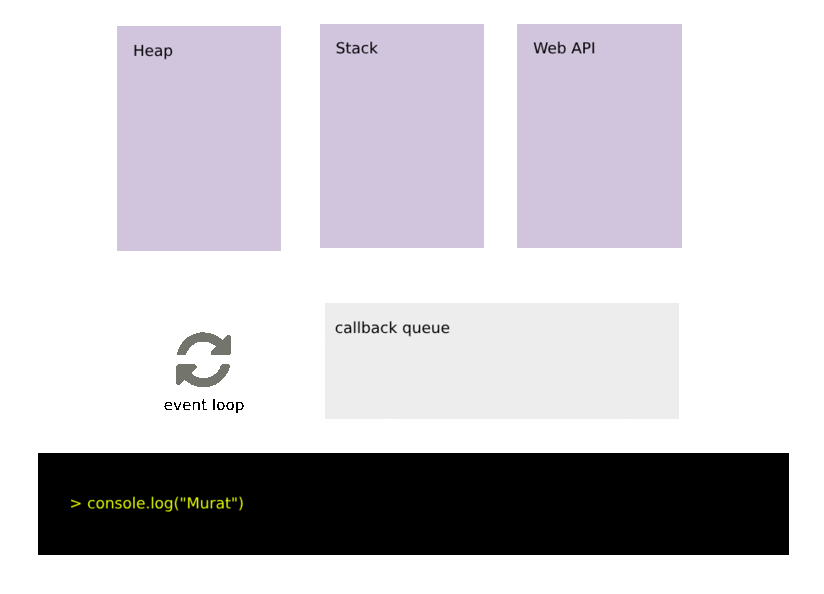

理解JavaScript：堆，栈，事件循环与回调队列
原文→
JavaScript是一种单线程语言，它与大多数语言不同。它缺乏多线程应用程序的能力，也因此不必处理死锁或共享变量等复杂问题。
单线程？
单线程语言将缺少同时运行的并发进程。这意味着，如果有一个进程需要很长时间，那么它将阻止其他进程运行。因此，浏览器中定义了一个等待进程响应的超时（timeout）。当进程在超时时间内没有响应，将看到一个弹出窗口，询问是否终止进程。
不要在浏览器上运行任何需要很长时间的业务，以免阻塞其他功能。
那么，JavaScript如何模拟在多线程环境中运行我们的命令呢？为了回答这个问题，让我们深入了解JavaScript环境。
JavaScript环境

尽管JavaScript是一种单线程语言，但我们有一个强大的助手，即浏览器，它能够管理复杂的操作。 Web API、回调队列和事件循环机制是浏览器的一部分。
让我们深入了解每一部分的细节。
堆（Heap）
堆是我们定义变量时存储对象的地方（内存）。
栈（Stack）
栈保存函数调用。每次调用新函数时，它都被推到栈的顶部。当JavaScript出现异常时，可以通过栈追踪（stack trace）查看栈。
译者注：Stack也翻译为堆栈
Web API
浏览器已经定义了API，开发人员可以使用这些API来处理复杂的流程，例如获取访问者的位置，GeoLocation已经被定义。可以在参考文献（1）的链接中找到定义的API列表。
回调队列（Callback Queue）
当一个进程完成它的工作（比如xhr调用）时，它将被放入回调队列中。事件循环进程在栈为空后触发回调队列，这意味着进程将在该队列中等待，直到栈为空。一旦我们的栈没有函数调用，就会从回调队列中弹出一个进程并将其推入栈。
事件循环（Event Loop）
负责检查栈并持续触发回调队列的进程。
例子

以上例子的预期输出是什么？它以一个console.log开始，然后继续一个setTimeout函数，我们想通过给一个”0”的超时来立即运行，然后是另一个console.log。
setTimeout是个特别的函数。它没有定义在ECMAScript规范中，只是一个Web API（2）。它是异步工作的，不能保证函数在给定的超时时间后工作，但保证它至少会等待给定的时间。所以
setTimeout(fn,0)不会立即启动，但至少要等待0毫秒。

解释一下，当我们在上面运行代码片段时，它将如何运行。
- 我们的第一个
console.log(“Murat”)将被压入栈，因为我们正在进行函数调用。 - 变量
Murat将保存在堆（内存）中。 - 因为它不是异步调用，所以它将输出给定的参数。
- 第一个
console.log函数将从栈中移除，堆将置为空。 setTimeout函数将被调用。因此它将被压入栈。- 它即是一个异步函数也是一个Web API函数。它将被放入Web API的方块里，并且
setTimeout函数将从栈中移除。 - 后台的计时器将启动，以等待至少给定的时间来设置超时。
console.log(“Yusuf”)将被调用，并且它将被压入栈，变量Yusuf将存储在堆中。- 它将输
Yusuf。但同时，我们的事件循环将继续检查栈的状态。 - 在输出
Yusuf之后，它将从栈和堆中移除。 - 当计时器确定它至少等待了给定的时间后，它将被推入回调队列(
console.log(“Fatih”)） - 当栈为空时，事件循环将触发回调队列。
- 接下来，
console.log(“Fatih”)将被压入栈。
因此，输出的顺序是：Murat，Yusuf，Fatih。